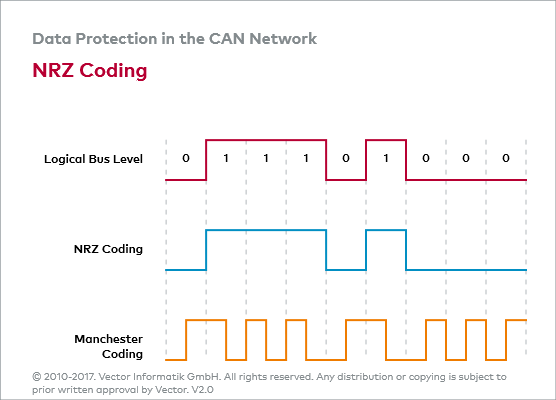
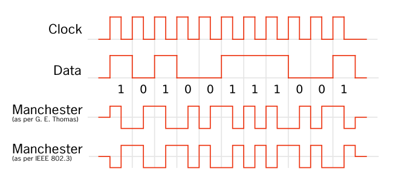

Codifica di linea
Table of Contents
1. A cosa serve una codifica di linea
Avviene prima di trasmettere l'informazione in linea. Consiste nel codificare l'informazione in maniera tale da trasformarli in un segnale elettrico idoneo alla linea ed alla tecnica di trasmissione.
Figure 1: Riepilogo
2. Caratteristiche che dovrebbe avere un segnale di linea
2.1. Eliminazione della componente continua
Considerando che di solito la trasmissione avviene a distanza ed è spesso necessario l'impiego di ripetitori di segnale, la circuiteria non consentirebbe la rigenerazione del segnale nel caso di un segnale continuo.
È necessario cercare di eliminare la componente continua del segnale che stiamo trasmettendo.
2.2. Componente alla frequenza di cifra
In ricezione il segnale deve essere ricostruito. Abbiamo quindi bisogno che ci sia una componente diversa da zero alla frequenza di cifra. Sarebbe utile che il nostro segnale in arrivo abbia una componente alla frequenza di cifra \(F_c\).
In realtà è un falso problema.
2.3. Riduzione delle lunghe frequenze di zeri
Il segnale non deve avere lunghe sequenze di zeri per evitare che in ricezione si abbiano dei problemi di decodifica.
2.4. Riduzione della banda occupata dal segnale
Non dovrebbe occupare una banda troppo larga.
3. Tipi di codici di linea a disposizione

Figure 2: Metodi di codifica
3.1. Codice NRZ (non ritorno a zero)
Il segnale elettrico risultante è identico ai bit di partenza. NOTA: in ricezione, ogni codifica viene trasformata in NRZ.

Figure 3: Codifica NRZ
Spettro: si annulla alla Fc, a 2 Fc eccetera. La banda occupata è uguale ad Fc. Il problema è che la componente continua (la media del segnale) ha una frequenza molto alta. Per questo motivo, non useremo NRZ per la trasmissione a lunghe distanze.
Per il circuito è sufficiente utilizzare un comparatore.
3.2. Codifica RZ (ritorno a zero)
Figure 4: Codifica RZ
I bit zero rimangono a zero, mentre i bit uno rimangono per metà tempo a livello basso e per l'altra metà a livello alto.
Grazie a questo ho una componente continua più bassa ma ho allargato la banda. Non solo, in corrispondenza di Fc ho una componente che posso estrarre (perchè ha un valore diverso da zero).
In ogni caso non ho risolto il problema perchè la componente continua è abbastanza alta.
3.3. Codifica di Manchester

Figure 5: Codifica di Manchester
In questo modo abbiamo un valore medio che è molto prossimo a 0. Il problema però è che la banda occupata dal segnale è molto elevata.

Figure 6: Banda Manchester
3.4. Codifica AMI
AMI = Alternated Mark Inversion
Figure 7: Codifica AMI
Deriva dal codice RZ ma si differenzia per il fatto che gli impulsi devono essere alternati. Ha un valore medio molto prossimo a zero, una banda piccola ma si annulla ad Fc. In realtà però il fatto che sia nullo in Fc è un falso problema perchè in demodulazione lo convertiamo comunque in RZ o qualsiasi altro codice che abbia la Fc.
Figure 8: Banda AMI
Rimane però il problema delle lunghe sequenze di zero, poichè potrebbero creare dei problemi di codifica in ricezione. Per risolvere, si usa HDB-n
3.5. Codifica HDB-n
Figure 9: Banda HDB-3
Dove n è il numero massimo di zeri consecutivi consentiti. Ad esempio, HDB-3 mi permette di trasmettere 3 zeri consecutivi prima che il codice intervenga.
Consiste nel codice AMI ma quando c'è una violazione (troppi zeri consecutivi) il codice interviene, in modi diversi in base a se il numero di uno è pari o dispari.
4. Per ricostruire un segnale NRZ
Devo assicurarmi di prendere proprio il centro del livello alto. Per questo motivo, traslo il clock in modo che il fronte di salita sia al centro.
RZ = (NRZ) and (CLOCK) Con l'and logico, il segnale è diverso da zero solo quando sono alti sia il clock che l'NRZ.
Per trasmettere in NZ e convertire in NRZ in ricezione:

Figure 10: Circuito di conversione RZ -> NRZ
5. Per trasmettere in codice AMI e riconvertire in NRZ
Figure 11: Circuito di conversione NRZ -> AMI
6. Conversione NRZ -> Bifase -> NRZ

Figure 12: Circuito di conversione NRZ -> Bifase -> NRZ